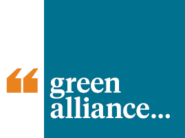

Interactive maps of UK rail flows:
Visualising costs and times
These interactive maps accompany the Green Alliance report Accellerating Modal Shift.
- Generalized costs assume a value of time of £15/hour. Real valus of time vary considerably depending on the traveller and trip purpose (usually less than this for leisure trips and more for business trips).
- Train costs are median values, often reflecting tickets bought in advance (standard fares are higher).
- Train times are median values; real journey times vary depending on time of departure.
- Car fuel costs are estimates from Trainline.com. Individual cars vary substantially in fuel costs.
- Full details of the method and data sources can be found in the technical report.
| Map data | Large PKM | Most Journeys | Principal Routes |
|---|---|---|---|
| Perceived generalized cost of rail vs car |  |  |  |
| Relative price of rail vs car |  |  |  |
| Relative time of rail vs car |  |  |  |
These maps were produced by Crispin Cooper, Cardiff University. The work was funded by the Foundation for Integrated Transport, and Trainline.com. The project was managed by Green Alliance. The maps contain data copyrighted to:
- Trainline.com, released under license for this project
- Office of Road and Rail, released under Open Government License v3
- OpenStreetMap contributors, released under the Open Database License
- Ordnance Survey (C) Crown Copyright and Database Right 2020-24
The interactive maps are built using the deck.gl and pydeck libraries.